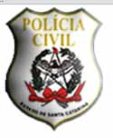

Conforme orgulhosamente informou nosso amigo leitor Karlos, estão abertas as inscrições para o concurso público de 2008 da Polícia Civil do Estado de Santa Catarina.
No total serão 900 vagas, sendo 150 para Delegado, 270 para Escrivão, 30 para Comissário, 120 de Escrevente e 330 para Investigador Policial.
A taxa de inscrição para o concurso de Delegado é de R$ 100,00 e a prova objetiva está marcada para 6 de abril de 2008, sendo necessário ao candidato ser bacharel em Direito.
Já para Escrivão de Polícia e Comissário de Polícia é necessário diploma de ensino superior em qualquer área, e a taxa de incrição é de R$ 80,00, enquanto para Escrevente e Investigador é necessário 2º grau de formação e a taxa fica em R$ 60,00.Como de praxe, o concurso público tem validade de dois anos, a contar da data de publicação do resultado final no Diário Oficial, podendo ser prorrogado por igual período, a critério da SSP.
As inscrições começam no dia 18 de fevereiro e se estendem até 19 de março e só podem ser feitas via Internet neste link. As provas objetivas acontecem em abril. O efetivo da PC hoje é de 3 mil policiais. Os exames vão acontecer nas cidades de Blumenau, Chapecó, Criciúma, Florianópolis, Lages e Joinville.
Lembrem-se que disponibilizei na nossa página com provas de concurso para download as últimas provas para os cargos da Polícia Civil catarinense, agora é com você!
Leia a notícia na página oficial da Polícia Civil de Santa Catarina.
Siga os links para ler o Edital do concurso para Delegado; ou para o Edital do concurso para Escrivão de Polícia / Comissário de Polícia / Escrevente Policial / Investigador Polícial.
Para se inscrever no concurso para Delegado; ou para se inscrever para os outros cargos policiais.
Leia ainda o Estatuto dos Policiais Civis de Santa Catarina, que será cobrado nas provas. E boa sorte!